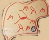
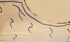
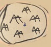
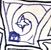

Territoires
Foret/Plaine
| apparence | coût en deplacements | coût à d'attaquer | revenus / tour |
|---|---|---|---|

|
1 ou 1 |
1 |
1^^ et 1€ |
Deserts/Volcan
| apparence | coût en deplacements | coût à d'attaquer | revenus / tour |
|---|---|---|---|
|  |
1 ou 1 |
1 |
0 |
Lac/Neige
| apparence | coût en deplacements | coût à d'attaquer | revenus / tour |
|---|---|---|---|
|  |
0 ou 1 |
1 |
1^^ et 1€ |
Montagnes
| apparence | coût en deplacements | coût à d'attaquer | revenus / tour |
|---|---|---|---|
|  |
2 ou 1 |
2 |
1^^ et 1€ |
Radiamagique
le territoire Radiamagique est un territoire difficile à contrôler:
- il a une force de défence lorce qu'il est vide de
- si à un moment où un autre la force des troupes qui l'occupent decend en dessous de
| apparence | coût en deplacements | coût à d'attaquer | revenus / tour |
|---|---|---|---|
|  |
2 ou 2 |
3 |
1£ et 1¤ |
Héritages
Introduction
les héritages sont des petites ajouts aux territoires qui peuvent permettre d'y constuire un batiment, augmenter ses revenu ou d'autres caractéristiques du territoire.
village
un village est près à defendre son territoire quelque-soit la situation et le fait prospérer:
- augmentation du revenu du territoire de 1 € ou de 1 ^^,
au choix du propriétaire du territoire
- augmentation de la force de défence du territoire de 1 plus le nombre
de village que possède l'attaquant, il est important de noter que le territoire se
défandra donc même si il n'appartien pas à un joueur
ruine de fort
une ruine de fort peut faire une place forte importante à condition de la réparer:
- il est possible de construire le batiment fort sur ce territoire
gisement de fer
un gisement de fer est un bon lieu pour placer une mine:
- il est possible de construire le batiment mine sur ce territoire
gisement de diamant
un gisement de diamant est un bon lieu pour placer une mine de Diamant:
- il est possible de construire le batiment mine de Diamant sur ce territoire
Source
une source est un bon lieu pour placer un temple:
- il est possible de construire le batiment temple sur ce territoire
Oeuf divin
l'Oeuf d'un être divin est le seul endroit où l'on peut placer un temple Divin:
- il est possible de construire le batiment temple Divin sur ce territoire